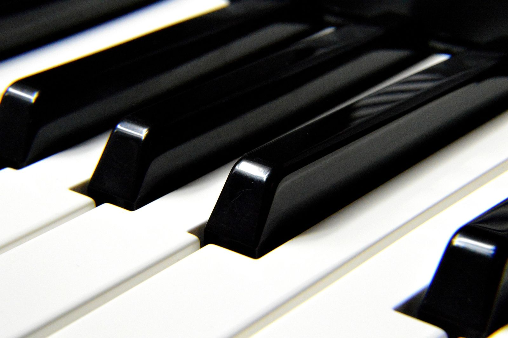

Piano | Comparativo
Conheça e compare os principais tipos de piano antes de escolher o seu.
Comparar tiposO que é um piano?
O piano é um instrumento musical de cordas percutidas, inventado no início do século XVIII. Ele possui um teclado com teclas brancas e pretas que, ao serem pressionadas, acionam martelos que batem nas cordas. É usado em diversos estilos, da música clássica ao jazz e ao pop.
Tipos de piano
- Piano acústico de cauda
- Piano acústico vertical
- Piano digital
- Piano híbrido
| Tipo | Como produz o som | Espaço | Indicado para |
|---|---|---|---|
| De cauda | Martelos em cordas horizontais | Grande | Concertos, estúdios e salas de recital |
| Vertical | Martelos em cordas verticais | Médio (encostado na parede) | Estudo em casa e escolas de música |
| Digital | Amostras gravadas de pianos reais | Pequeno | Iniciantes e estudo silencioso com fones |
| Híbrido | Mecânica acústica com som digital | Médio | Toque de acústico com opção de estudo silencioso |
Faixas de preço
Preço de referência aproximado de um modelo de entrada de cada tipo, em milhares de reais.
Galeria



Onde ouvir piano ao vivo
O Teatro Santa Roza, em João Pessoa, recebe recitais e concertos ao longo do ano.